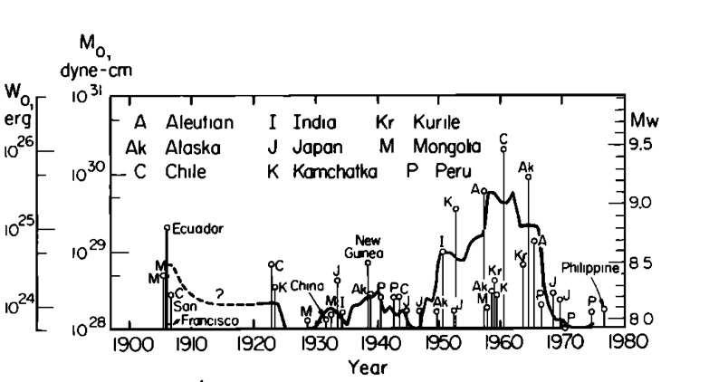

A Presentation by Russel Wilcox-Cline
Relationship between fault area and the seismic moment. Solid lines indicate lines of constant stress drop.
Kanamori Figures 2 and 3
 Order of magnitude decrease
between 1950-1965 to
1920-1950
Energy calculated using GR
Underestimates energy of great EQs
Approximate for moderate-large EQs
Number of events is a better approximate for moderate-large EQs
How do E and N compare?
Latitudinal variation in Earth's axis of rotation
Present in rotation of all non-uniform spherical bodies
Influenced by great earthquakars...or...causes great earthquakes?
Compare to W0
(1) Great earthquake deformation excites Chandler wobble
(2) Increased wobble caused by atmospheric effects accelerates plate motions